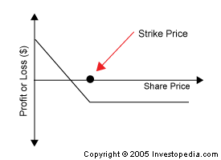

An option contract giving the owner the right, but not the obligation, to sell a specified amount of an underlying asset at a set price within a specified time. The buyer of a put option estimates that the underlying asset will drop below the exercise price before the expiration date.
The possible payoff for a holder of a put option contract is illustrated by the following diagram:
When an investor purchases a put, he or she expects the underlying asset will decline in price. The investor will then profit by either selling the put options at a profit, or by exercising the option. If an investor writes a put contract, he or she is estimating the stock will not decline below the exercise price, and will not fall significantly below the exercise price.
Consider if an investor purchased one put option contract for 100 shares of ABC Co. for $1, or $100 ($1*100). The exercise price of the shares is $10 and the current ABC share price is $12. This contract has given the investor the right, but not the obligation, to sell shares of ABC at $10.
If ABC shares drop to $8, the investor's put option is in-the-money and he can close his option position by selling the contract on the open market. On the other hand, he can purchase 100 shares of ABC at the existing market price of $8, then exercise his contract to sell the shares for $10. Excluding commissions, the total profit for this position would be $100 [100*($10 - $8 - $1)]. If the investor already owned 100 shares of ABC, this is called a "married put" position and serves as a hedge against a decline in share price.
{kind=link}